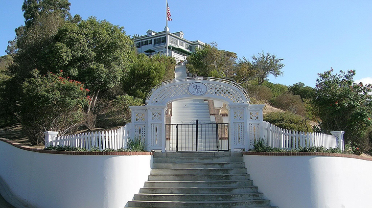

I visited Catalina Island a few times but the first time I visited nearly 9 years ago, I knew it was a special place but I couldn't explain why. I was raised catholic and confirmed catholic however I ended up becoming Agnostic Atheist most of my adult life. Everything has changed for me spiritually after my girlfriend and I made contact on 4/19 and saw the light. My instinct was telling me to visit Catalina Island a few months before but I decided not to go. My birthday was coming up on 4/20 and my girlfriend's mom suggested that we visit Catalina Island. We headed to Catalina Island on Monday 4/19 and nearly missed the ferry. My girlfriend was parking our car in Long Beach and was walking the opposite direction when a car alarm went off. She ended up turning around and going the correct way towards the ferry. By the time she got to the gate it was already closed but the captain decided to let us to board nearly 10 minutes after the original departure time. We nearly missed our ferry but I knew we were meant to be at Catalina Island at that time. Once we arrived I tried calling a bunch of companies to see if we could get dropped off somewhere inland or at a more remote place where there were less people. Unfortunately, on a Monday night in Avalon most things were closed thanks to COVID and limited staff. After eating dinner, I went to the bar and asked if they knew of any taxis. They told us where the taxi company was located so we we walked there to see if there were any rides available but it was already closed. A random restaurant employee happened to walk by us and I decided asked her if she knew anyone who could drive us around the island because we were only going to be at Catalina for a short time. She mentioned someone named Eric and told us to go to a few restaurants in order to get his number and call him. We walked to several restaurants and after the second one we ended up finding Eric. He had just finished eating his dinner and I asked him if he could drive us around the island. He said yes and dropped us off at our hotel first so that we could change because it was getting colder at night. I asked Eric to see if he could take us to the summit or a place where me and my girlfriend could be alone and safe. He told us the Summit was closed but he would take us somewhere else. We didn't actually pick or choose where we would be dropped off, Eric did.  Eric drove us up the mountain at night and we ended up being dropped off at the wrigley mansion entrance and we were sitting on the stairs around 9pm. There were a few people that stopped directly in front of us so after an hour we decided to look for a quieter spot away from people. My girlfriend led us down a few stairs and we kept walking around in the dark following a dirt trail. It was pitch black and we were using our cell phone lights to get around. We had never been here before but eventually the dirt path opened up and we looked up and saw a large cross. Once we saw the cross I just had a feeling that this was the spot where we should be, however it was my girlfriend who led us there in the dark. Once we got to the cross I put my backpack down for my girlfriend to sit on. Right after that I walked to the cross and placed my speaker directly in front of it.